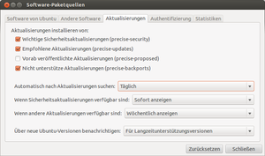

Aktualisierungen
Dieser Artikel wurde für die folgenden Ubuntu-Versionen getestet:
Dieser Artikel ist größtenteils für alle Ubuntu-Versionen gültig.
Ein Betriebssystem besteht aus einer großen Zahl einzelner Programme und stellt durch das komplexe Zusammenspiel dieser eine Schnittstelle zwischen dem Anwender und der Hardware her. Bei einer Linux-Distribution wie Ubuntu kommt zum eigentlichen Betriebssystem (dem Kernel) noch eine ganze Reihe von Anwendungsprogrammen hinzu. Durch die immens hohe Zahl von Kombinationsmöglichkeiten dieser Programme ist es sehr schwierig, das System optimal aufeinander abzustimmen und Fehler auszuschließen.
Um einem lückenlosen und fehlerfreien System möglichst nahe zu kommen, durchläuft jede Art von moderner Software mehrere Entwicklungsschritte und verschiedene Teststufen. Nähere Angaben dazu kann man diesem Artikel in Ikhaya entnehmen. Werden nach der Veröffentlichung der Software Fehler entdeckt, so werden diese im Idealfall schnellstmöglich behoben und eine neue Version der Software angeboten. Manchmal werden mehrere Fehler gleichzeitig mit einer neuen Software-Version korrigiert, damit die Versionsnummern nicht zu unübersichtlich werden.
Auf diesem Wege wird die Ubuntu-Installation immer auf dem aktuellen Stand gehalten, was bei LTS-Versionen bedeutet, dass das eigene System identisch zu nachträglich veröffentlichten Point-Releases (z.B. 10.04.1) ist - wenn man immer alle Updates eingespielt hat. Es ist daher nicht notwendig, diese neue Version eigenständig herunterzuladen, es sei denn, der Ubuntu-Rechner hat keine oder nur eine eingeschränkte Verbindung zum Internet. In so einem Fall empfiehlt sich ein Update mittels einer aktuellen Ubuntu-Alternate-CD oder -DVD (siehe Downloads).
Wie Updates in den verschiedenen Ubuntu-Versionen installiert und das Verhalten konfiguriert werden können, wird unter Aktualisierungen/Konfiguration beschrieben.
Hinweis:
Der Wechsel einer Ubuntu-Version wird nicht als "Update" (deutsch: Aktualisierung), sondern als Upgrade (deutsch: Aufrüstung) bezeichnet.
Im Gegensatz zu Debian wird beim Aktualisieren mit dem Befehl apt-get dist-upgrade nicht die Ubuntu-Version verändert. Dazu ist der Befehl do-release-upgrade nötig.
Update-Politik¶
Die Politik der Ubuntu-Entwickler ist, nach der Veröffentlichung einer neuen Ubuntu-Version die Anwendungsprogramme möglichst unangetastet zu lassen und keine neuen Versionen einzelner Komponenten zu integrieren, da auf diese Weise die Stabilität beeinträchtigt werden könnte. Da eine neue Ubuntu-Version alle sechs Monate erscheint und diese in der Regel sehr aktuelle Pakete enthält, ist eine regelmäßige Aktualisierung auf neue Programmversionen zwischen zwei Veröffentlichungen von stabilen Versionen der Distribution meist unnötig.
Von dieser Grundregel gibt es nur zwei Ausnahmen: die Programme Firefox und Thunderbird werden seit Anfang 2012 für alle noch unterstützten Ubuntu-Versionen regelmäßig aktualisiert, so dass man für eine neuere Version nicht die Ubuntu-Version wechseln muss.
Für den Fall, dass Fehler gefunden werden, die die Funktionalität einer Software einschränken oder ein Sicherheitsrisiko für einen potentiellen Angriff (Exploit) darstellen, werden "Updates", also Aktualisierungen von Software, zur Verfügung gestellt.

Aktualisierungen¶
Die Paketquellen zur Aktualisierung von Ubuntu werden in mehrere Bereiche eingeteilt, wobei die ersten beiden sehr wichtig sind. Vorangestellt wird immer der Codename der Ubuntu-Version (man kann diesen mit dem Befehl lsb_release -c herausfinden), also z.B. trusty für Ubuntu 14.04:
...-security
...-updates
...-proposed
...-backports
In den Bereich security fallen alle Sicherheitsaktualisierungen, im Bereich updates sind alle weiteren Änderungen zu finden, die nicht sicherheitsrelevanter Natur sind. Genaue Beschreibungen der einzelnen Bereiche, auch zu proposed (vorgeschlagen) und backports (Rückportierungen), sind im Artikel Paketquellen zu finden.
Achtung!
Pakete aus den proposed-Quellen haben auf Produktivsystemen nichts zu suchen. Pakete aus proposed können fehlerhaft sein und das System unbrauchbar machen!
Bei einem neu installierten Ubuntu sind security und updates immer schon aktiviert, man braucht hier also normalerweise nichts zu verändern. Wie diese Updates eingespielt werden, wird im Artikel Aktualisierungen/Konfiguration erklärt.
Wer die Paketquellen (u.a. für Aktualisierungen) manuell bearbeiten möchte, findet dazu unter Paketquellen freischalten und (für manuelle Bearbeitungen) sources.list die notwendigen Informationen. Allerdings lassen sich in der sources.list die Zeiträume bzw. die Häufigkeit der Suche nach Updates nicht konfigurieren.
security¶
Dies ist die wichtigste Quelle für Aktualisierungen, vor allem, wenn der Rechner mit dem Internet verbunden ist. Wenn es sicherheitsrelevante neue Versionen von Paketen gibt, so werden diese neuen Pakete hier zur Verfügung gestellt und sollten unverzüglich installiert werden.
updates¶
Dieser Bereich enthält Updates von Paketen, wie etwa neuere Sprachpakete oder Fehlerbereinigungen, die keine sicherheitsrelevanten Änderungen enthalten.
multiverse/universe¶
Stammt ein Programm bzw. Paket dagegen aus einem dieser beiden Bereiche, erfolgt grundsätzlich keine Aktualisierung – auch nicht, wenn diese aufgrund von Sicherheitsproblemen zwingend erforderlich wäre. Diesen Punkt sollten insbesondere Betreiber von Servern beachten, wenn bestimmte Serverdienste genutzt werden sollen.
Problembehebung¶
Updates werden ohne Kennwort eingespielt¶
In neueren Ubuntu-Versionen ist das durchaus möglich. Siehe Benutzung.
Nicht vertrauenswürdige Quellen¶
Bei der Fehlermeldung
"Installation von Paketen erforderlich, denen nicht vertraut werden kann"
die Signatur des bemängelten GPG-Schlüssels aktualisieren.
Vorhandene Aktualisierungen werden nicht angezeigt¶
Von diesem Problemen sind insbesondere die offiziellen Ubuntu-Varianten betroffen. Siehe „Aktualisierungsverwaltung“ erscheint nicht mehr automatisch im Forum.
Problematische Aktualisierung deinstallieren¶
Um eine aktualisierte Version eines Paketes mit Problemen zu entfernen, kann man temporär eine verfügbare Vorversion installieren, bis neue Aktualisierungen das Problem behoben haben. Verfügbare Versionen werden durch apt-cache policy angezeigt. In der Regel ist dies die erste Version aus den offiziellen Paketquellen. Die Version kann man mit apt-get install zur Installation angeben. Die Vorgehensweise lässt sich auch im Recovery Modus umsetzen. Alternativ bietet Synaptic eine grafische Möglichkeit dazu an.
"Das Herunterladen von Informationen zu Software-Paketquellen ist gescheitert - Überprüfen Sie Ihre Internetverbindung"¶
Dieser Fehler kann auch bei fehlerfreier Internetverbindung auftreten, wenn für eine angeforderte Fremdquelle wie ein PPA, kein zur vorliegenden Ubuntu-Version kompatibles Release vorliegt. Dann bleibt nur, wieder auf eine passende Ubuntu-Version zurückzugehen oder auf die betreffende Quelle zu verzichten, denn dieser Fehler blockiert auch die Aktualisierung aller gültig verfügbaren Pakete, auch aus den offiziellen Paketquellen..
Links¶
Intern¶
Unterschiede LTS und normale Version - weitere Informationen über die unterschiedlichen Versionen von Ubuntu
Aktualisierungen/Konfiguration - Einrichten von automatischen Updates und Benachrichtigungen
Muon Aktualisierungsverwaltung - Update Manager für KDE
sources.list - manuelle Konfiguration der Paketquellen und Aktualisierungen
Lokale Paketquellen - Programme, um einen oder mehrere Ubuntu-PCs (auch ohne Internetanschluss) aktuell zu halten
Fehler melden - wie man einen Fehler an die Entwickler melden kann

Extern¶
Ubuntu Paketsuche

 - nach vorhandenen Programmen und Versionen suchen (nur für offiziell unterstützte Ubuntu-Versionen)
- nach vorhandenen Programmen und Versionen suchen (nur für offiziell unterstützte Ubuntu-Versionen)Übersicht über Ubuntu-Updates
UbuntuUpdates.org
- kann bei der Suche nach neueren Programmversionen nützlich seinUbuntu Security Notices
- offizielle Übersicht zu den Sicherheits-UpdatesPro-Linux Sicherheitsservice
- weitere chronologische Übersicht über alle sicherheitsrelevanten Aktualisierungen für Ubuntu
- Erstellt mit Inyoka
-
 2004 – 2017 ubuntuusers.de • Einige Rechte vorbehalten
2004 – 2017 ubuntuusers.de • Einige Rechte vorbehalten
Lizenz • Kontakt • Datenschutz • Impressum • Serverstatus -
Serverhousing gespendet von